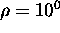

In the interests of avoiding complications due to lighting variation, one may wish to employ the edge map in the neighbourhood of candidate landmarks, rather than the local intensity distribution. That is, apart from the initial task of detecting landmark candidates, we substitute the edge map of an image in place of its intensity map whenever an intensity distribution is called for in the method. Figure 6.7 demonstrates the results of applying this technique to the Scene 1, for and . The mean error in pose is 0.56cm.
Figure 6.7: Estimation
results for edge-based estimation. The plot depicts the set of pose
estimates for the twenty test cases in Scene I with
and . The mean error is 0.56cm
While Figure 6.7 indicates that the method works
marginally well for pose estimation, particularly along the x axis,
performing purely appearance-based ( ) pose estimation using
the edge distribution fares much worse, as shown in
Figure 6.8. Our hypothesis is that
instabilities and low-intensity noise
) pose estimation using
the edge distribution fares much worse, as shown in
Figure 6.8. Our hypothesis is that
instabilities and low-intensity noise in the edge distribution compromise our assumption of local
linearity. Furthermore, we are employing linear analysis to
reconstruct the output of a highly non-linear operator.
in the edge distribution compromise our assumption of local
linearity. Furthermore, we are employing linear analysis to
reconstruct the output of a highly non-linear operator.
Figure 6.8: Estimation results for edge-based estimation using only
appearance. The plot depicts the set of pose estimates for the
twenty test cases in Scene I with and
. The mean error is 2.0cm